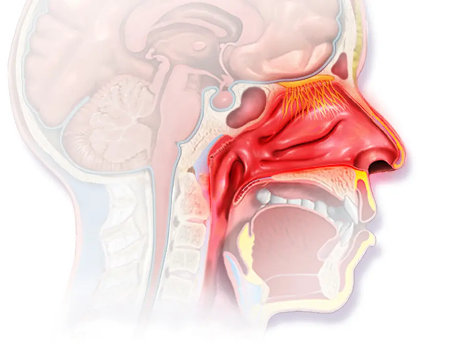

Écoulement nasal — S1.14
Un écoulement nasal naît le plus souvent d’un rhume, d’une allergie ou d’une rhinosinusite, mais il révèle parfois une brèche de la base du crâne, une pile bouton ou un cancerS4S2S9S6S10. Le médecin exclut donc d’abord la rhinosinusite compliquée (E1), la fuite de liquide cérébrospinal (E2), le corps étranger agressif (E3) et la tumeur maligne (E4)S4S9S6S10. Leur retard aggrave en effet le risque pour la vue, la vie ou le septum nasalS4S9S6. Il classe ensuite l’écoulement selon sa durée, son côté et son aspect, ce qui oriente vers les causes fréquentes sans examen inutileS8S5. Il ne prescrit enfin qu’avec l’AIPS (information professionnelle suisse) du médicament, et il écrit « hors AIPS » lorsqu’une indication y manqueAIPS 24926AIPS 54189.
Contenu établi à partir des sources citées ; non validé cliniquement par un médecin.
1. Définition
Le catalogue PROFILES 2023 (Principal Relevant Objectives and Framework for Integrated Learning and Education in Switzerland) retient l’écoulement nasal comme situation clinique de départ S1.14S1.
L’EPOS (European Position Paper on Rhinosinusitis and Nasal Polyps) nomme en 2020 ce symptôme « nasal discharge », qu’il soit antérieur ou postérieur sous forme de « nasal drip »S8.
L’EPOS2020 définit la rhinosinusite aiguë de l’adulte comme l’apparition soudaine de deux symptômes ou plus, dont une obstruction ou un écoulement nasal, durant moins de 12 semainesS8.
Les HUG (Hôpitaux universitaires de Genève) définissent la rhinite allergique comme une maladie symptomatique du nez, induite par une inflammation médiée par les IgE (immunoglobulines E) après exposition à un allergèneS2.
L’EAACI (European Academy of Allergy and Clinical Immunology) décrit la rhinite non allergique comme une cause fréquente de symptômes nasaux chroniques, dont la congestion, la rhinorrhée et l’hyperréactivitéS11.
La rhinorrhée de LCS (liquide cérébrospinal) se définit enfin par une communication anormale entre l’espace sous-arachnoïdien et la cavité nasaleS9.
2. Épidémiologie (Suisse, puis Europe)
En Suisse, les HUG dénombrent jusqu’à 2 millions de personnes atteintes de rhinite allergique, tandis que plus de 500 000 personnes souffrent d’asthmeS2.
Le BIHAM (Institut bernois de médecine de famille) estime que la rhinosinusite aiguë touche 6 à 15 % de la population, soit environ un adulte sur huitS4.
La rhinosinusite virale survient de 2 à 5 fois par personne et par an ; en revanche, la complication bactérienne ne concerne que 0,5 à 2 % des adultesS4.
Le service d’ORL (oto-rhino-laryngologie) des HUG indique que la rhinosinusite chronique touche jusqu’à 15 % de la population et la polypose nasale jusqu’à 3 %S3.
En Europe, les cancers nasosinusiens restent rares, car leur incidence standardisée reste inférieure à 10 cas par million d’habitantsS10.
Le rang de fréquence de chaque diagnostic et son rang E d’exclusion figurent dans la fenêtre classement des dix diagnostics, qui justifie chaque rang par une source.
Classement des dix diagnostics différentiels par fréquence et gravité
Le rang suit la fréquence en Suisse lorsqu’elle est publiée, puis en Europe ; un rang sans pourcentage repose sur un argument sourcé écrit dans sa ligne.
| Rang | Diagnostic (fichier) | Fréquence ou argument du rang | Gravité | Source |
|---|---|---|---|---|
| 1 | Rhinite virale aiguë (DX.1) | Elle survient de 2 à 5 fois par personne et par an. | Elle guérit seule et ne menace pas. | S4 |
| 2 | Rhinite allergique (DX.2) | Elle touche jusqu’à 2 millions de personnes en Suisse. | Elle multiplie par 8 le risque d’asthme. | S2 |
| 3 | Rhinosinusite aiguë postvirale (DX.4) | Rang argumenté : la rhinosinusite aiguë atteint 6 à 15 % par an, et la forme postvirale en constitue une étape. | Elle guérit seule dans la majorité des cas. | S4S8 |
| 4 | Rhinosinusite chronique sans polypes (DX.6) | Rang déduit : la rhinosinusite chronique touche jusqu’à 15 %, dont la polypose représente au plus 3 %. | Elle altère durablement la qualité de vie. | S3 |
| 5 | Rhinite non allergique (DX.3) | Rang argumenté : environ 50 % des personnes avec une rhinite persistante en présentent un sous-type. | Elle gêne sans menacer. | S11 |
| 6 | Rhinosinusite chronique avec polypes (DX.7) | Elle touche jusqu’à 3 % de la population. | Elle s’associe à l’asthme et récidive. | S3 |
| 7 | Rhinosinusite aiguë bactérienne (DX.5) 🚩 | Rang déduit : elle complique seulement 0,5 à 2 % des rhinosinusites aiguës de l’adulte. | 🚩 E1 : elle menace l’orbite et l’encéphale. | S4 |
| 8 | Corps étranger nasal (DX.8) 🚩 | Rang argumenté : l’AP-HM le classe comme motif de consultation pédiatrique relativement fréquent. | 🚩 E3 : la pile bouton nécrose le septum. | S7S6 |
| 9 | Fuite nasale de liquide cérébrospinal (DX.9) 🚩 | Rang argumenté : elle exige une brèche, le plus souvent traumatique. | 🚩 E2 : elle expose à la méningite. | S9 |
| 10 | Tumeur maligne nasosinusienne (DX.10) 🚩 | Son incidence reste inférieure à 10 par million d’habitants. | 🚩 E4 : le retard aggrave le stade. | S10 |
Les numéros de fichiers DX.1 à DX.10 restent ceux de la Phase B ; le rang de fréquence ci-dessus sert donc au raisonnement probabiliste, et le rang E à l’ordre d’exclusion.
Les HUG jugent les coûts de la rhinite allergique supérieurs à ceux du diabète, de la maladie coronarienne et de l’asthmeS2.
La fenêtre enjeux de santé publique rassemble donc les chiffres utiles à la décision collective.
Enjeux de santé publique
| Chiffre | Population | Année | Source |
|---|---|---|---|
| Jusqu’à 2 millions de personnes ont une rhinite allergique. | Population suisse | 2023 | S2 |
| Un tiers des rhinites allergiques s’associe à un asthme. | Patients suisses avec rhinite allergique | 2023 | S2 |
| La rhinosinusite aiguë atteint 6 à 15 % de la population. | Population générale, synthèse suisse | Version 2.9.24 | S4 |
| La rhinosinusite chronique touche jusqu’à 15 % de la population. | Population générale, HUG | Page consultée en 2026 | S3 |
| La complication orbitaire ou intracrânienne survient chez 1 adulte sur 32 000 au plus. | Adultes avec rhinosinusite aiguë | Version 2.9.24 | S4 |
| Le cancer nasosinusien atteint moins de 10 cas par million. | Données internationales | 2025 | S10 |
La rhinosinusite aiguë constitue le cinquième diagnostic menant à une prescription d’antibiotique, d’où l’enjeu de résistance qui guide la conduite suisseS4.
Les fuites spontanées de LCS augmentent, surtout chez les femmes des régions où l’obésité progresse ; l’épidémiologie du surpoids modifie donc ce diagnostic rareS9.
Les cancers nasosinusiens touchent davantage les hommes, avec un rapport d’incidence de 1,3 en Norvège à 2,5 en Italie et en FinlandeS10.
3. Physiopathologie
La muqueuse nasale humidifie l’air et produit un mucus qui draine les sinus vers le pharynx ; un œdème des orifices de drainage bloque ce flux et entretient l’écoulementS8S13.
La fenêtre sinus de la face en couleurs montre les quatre paires de sinus drainées par les fosses nasales.
La fenêtre corrélation perturbation, exploration et traitement relie ensuite chaque mécanisme à son examen et à sa correction.
Sinus de la face : où naît l’écoulement d’une rhinosinusite
Les quatre paires de sinus de la face : Blausen Medical a dessiné cette illustration en couleurs, publiée sous licence CC BY 3.0S13.

Le lecteur recherche d’abord sur le cliché brut les quatre zones colorées et le halo rouge qui figure l’inflammation.
- 1. Le repère 1 montre le sinus frontal, dont l’atteinte provoque une céphalée sus-orbitaire et menace l’os frontalS13S5S4.
- 2. Le repère 2 montre les cellules ethmoïdales, dont l’atteinte comble l’angle interne de l’œil et gonfle la paupièreS13S5.
- 3. Le repère 3 montre le sinus maxillaire, dont la douleur sous-orbitaire augmente lorsque la tête se penche en avantS13S5.
- 4. Le repère 4 montre le sinus sphénoïdal, dont l’atteinte donne une céphalée rétro-orbitaire et un écoulement pharyngé postérieurS13S5.
Ce que l’image décide. Une douleur ethmoïdale avec œdème palpébral, ou une céphalée sphénoïdale intense, imposent d’exclure une complication avant tout traitement ambulatoireS5S4.

Dans le rhume, un virus comme le rhinovirus, responsable de 50 % des cas, enflamme la muqueuse ; la sécrétion devient alors abondante puis épaisse, sans infection bactérienneS4.
Dans l’allergie, l’allergène active les mastocytes par les IgE, ce qui libère histamine, leucotriènes et prostaglandines ; il en résulte prurit, éternuements et rhinorrhée aqueuseS2S14.
La fenêtre réaction allergique nasale montre la muqueuse enflammée et la région olfactive, car l’hyposmie oriente vers l’inflammation chronique.
Réaction allergique de la muqueuse nasale
Muqueuse nasale au cours d’une rhinite allergique : Blausen Medical a dessiné cette coupe sagittale en couleurs, publiée sous licence CC BY 3.0S14.

Le lecteur recherche d’abord sur le cliché brut la muqueuse rouge des cornets, puis la région olfactive au plafond de la fosse.
- 1. Le repère 1 montre les cornets rouges et gonflés, car l’histamine dilate les vaisseaux et produit l’œdèmeS14S2.
- 2. Le repère 2 montre la région olfactive, dont l’atteinte explique la baisse de l’odorat dans l’inflammation chroniqueS14S8.
- 3. Le repère 3 montre la narine, par laquelle s’écoule la rhinorrhée antérieure aqueuseS14S2.
- 4. Le repère 4 montre le rhinopharynx, vers lequel descend l’écoulement postérieur qui fait tousserS14S2.
Ce que l’image décide. Une muqueuse œdémateuse bilatérale avec prurit oriente vers une rhinite allergique, alors qu’un écoulement d’un seul côté exige un bilan ORLS2.

Dans la rhinite non allergique, une dysrégulation neurogène prédomine ; ainsi, la température ou l’humidité déclenchent les symptômes sans sensibilisation IgES11.
Dans la rhinorrhée de LCS, une pression intracrânienne élevée amincit la base du crâne, ce qui ouvre parfois une brèche spontanée sans traumatismeS9.
Corrélation : perturbation, exploration, thérapeutique
| Perturbation | Exploration qui la montre | Thérapeutique qui la corrige | Source |
|---|---|---|---|
| Le virus enflamme la muqueuse et augmente la sécrétion. | La clinique suffit, car la CRP (protéine C réactive) n’est pas nécessaire sans complication. | Les soins salins et les antalgiques soulagent pendant la guérison spontanée. | S4 |
| Les IgE déclenchent la dégranulation des mastocytes. | Le prick-test ou les IgE spécifiques montrent la sensibilisation. | Le corticoïde intranasal réduit l’inflammation, et l’antihistaminique bloque l’histamine. | S2 |
| L’œdème ostial bloque le drainage du sinus. | L’endoscopie ou le scanner montrent l’atteinte du complexe ostioméatal. | Le corticoïde intranasal et le rinçage salin rouvrent le drainage. | S8S3 |
| Une surinfection bactérienne colonise le sinus bloqué. | Le faisceau clinique tranche, car l’imagerie n’est pas recommandée sans complication. | L’amoxicilline traite les indications retenues par la SSI (Société suisse d’infectiologie). | S5 |
| Une brèche ostéodurale laisse passer le LCS. | La bêta-2-transferrine prouve le LCS, puis le scanner localise le défaut. | La fermeture endoscopique réussit dans plus de 90 % des cas. | S9 |
| Une tumeur obstrue une fosse et saigne. | L’endoscopie, l’imagerie puis la biopsie posent le diagnostic. | La chirurgie, la radiothérapie ou la chimiothérapie traitent selon le stade. | S10 |
4. Démarche diagnostique
Le médecin cherche d’abord les signes de gravité, car une complication orbitaire, une méningite ou une pile bouton ne tolèrent aucun délai thérapeutiqueS4S9S6.
Il exclut dans l’ordre la rhinosinusite compliquée (E1), la fuite de LCS (E2), le corps étranger agressif (E3) puis la tumeur maligne (E4)S8S9S6S10.
La fenêtre tableau comparatif des dix diagnostics distingue ensuite les dix diagnostics sur dix critères.
Tableau comparatif des dix diagnostics différentiels
Le tableau se lit ligne par ligne, et chaque cellule donne le signe ou la décision qui distingue le diagnostic des neuf autres.
| DX | Rang | E / 🚩 | Durée | Côté | Aspect | Signe clé | Examen qui tranche | Mécanisme | Conduite immédiate |
|---|---|---|---|---|---|---|---|---|---|
| DX.1 Rhinite virale aiguë | 1 | — | Elle dure moins de 10 jours. | Il est bilatéral. | Il devient épais. | Le contexte de rhume domine. | La clinique suffit. | Le virus enflamme la muqueuse. | On traite les symptômesS4. |
| DX.2 Rhinite allergique | 2 | — | Elle est intermittente ou persistante. | Il est bilatéral. | Il reste aqueux. | Le prurit et les éternuements dominent. | Le prick-test confirme. | Les IgE activent les mastocytes. | On évite l’allergène et prescrit un corticoïde nasalS2. |
| DX.3 Rhinite non allergique | 5 | — | Elle devient chronique. | Il est bilatéral. | Il reste clair. | Un irritant ou le froid la déclenchent. | Les tests allergiques restent négatifs. | Une dysrégulation neurogène agit. | On essaie un traitement localS11. |
| DX.4 Rhinosinusite aiguë postvirale | 3 | — | Elle dépasse 10 jours ou s’aggrave après 5 jours. | Il est souvent bilatéral. | Il devient purulent. | La pression faciale s’ajoute. | La clinique selon l’EPOS suffit. | L’œdème ostial persiste. | On surveille sans antibiotiqueS8. |
| DX.5 Rhinosinusite aiguë bactérienne | 7 | 🚩 E1 | Elle s’aggrave en deux temps. | Il prédomine d’un côté. | Il est purulent. | La fièvre dépasse 39 °C. | Le scanner injecté montre une complication. | Une bactérie colonise le sinus. | On adresse en urgence si l’œil est atteintS5. |
| DX.6 Rhinosinusite chronique sans polypes | 4 | — | Elle dure 12 semaines ou plus. | Il est bilatéral. | Il est muqueux. | Aucun polype n’apparaît. | L’endoscopie ou le scanner confirment. | Une inflammation persiste. | On prescrit corticoïde nasal et rinçageS8S3. |
| DX.7 Rhinosinusite chronique avec polypes | 6 | — | Elle dure 12 semaines ou plus. | Il est bilatéral. | Il est muqueux. | L’odorat disparaît. | L’endoscopie montre des polypes. | Une inflammation de type 2 domine. | On prescrit un corticoïde nasal à dose polyposeS8AIPS 54189. |
| DX.8 Corps étranger nasal | 8 | 🚩 E3 | Il persiste. | Il est unilatéral. | Il devient fétide. | Un enfant présente une rhinorrhée unilatérale. | La rhinoscopie le montre. | L’objet obstrue et irrite. | On extrait la pile bouton en urgenceS6S7. |
| DX.9 Fuite nasale de LCS | 9 | 🚩 E2 | Elle suit souvent un traumatisme. | Il est unilatéral. | Il reste clair et aqueux. | Il augmente en se penchant. | La bêta-2-transferrine confirme. | Une brèche ostéodurale fuit. | On adresse en urgence spécialiséeS9. |
| DX.10 Tumeur maligne nasosinusienne | 10 | 🚩 E4 | Elle persiste. | Il est unilatéral. | Il devient sanglant. | L’obstruction unilatérale s’associe à une douleur. | La biopsie après imagerie tranche. | Une prolifération maligne envahit. | On adresse rapidement en ORLS10. |
Le médecin discrimine ensuite les causes fréquentes par la durée, le côté et l’aspect ; la fenêtre diagnostics discriminants détaille le signe qui tranche et son piège.
Diagnostics discriminants : élément qui tranche, piège et conduite
| DX | Élément qui tranche | Piège | Conduite si positif | Source |
|---|---|---|---|---|
| Rhinosinusite compliquée (E1) | Un œdème périorbitaire, une diplopie ou une baisse visuelle apparaissent. | Un antibiotique oral ne prévient pas les complications. | Le médecin adresse en urgence et demande un scanner injecté. | S4S5 |
| Fuite de LCS (E2) | Un écoulement clair, unilatéral et positionnel suit un traumatisme. | Le signe du halo n’est qu’indicatif. | Le médecin fait doser la bêta-2-transferrine et adresse en ORL. | S9 |
| Pile bouton (E3) | L’enfant présente une rhinorrhée unilatérale ou une ingestion d’objet connue. | Le courant nécrose les tissus et perfore rapidement le septum. | Le médecin organise l’extraction immédiate. | S6 |
| Tumeur maligne (E4) | Une obstruction unilatérale persiste avec épistaxis ou douleur. | Un traitement de sinusite répété retarde le diagnostic. | Le médecin adresse rapidement en ORL pour endoscopie. | S10S2 |
| Rhinite allergique | Le prurit et les éternuements suivent une exposition. | Une sensibilisation isolée ne prouve pas l’allergie. | Le médecin teste si une désensibilisation se discute. | S2 |
5. Anamnèse ciblée et drapeaux rouges
L’anamnèse précise d’abord la durée, car moins de 10 jours orientent vers un rhume, tandis que 12 semaines ou plus définissent la chronicitéS4S8.
Elle précise ensuite le côté et l’aspect, puisque l’écoulement unilatéral, fétide, sanglant ou aqueux oriente vers une cause locale graveS7S9S10.
La fenêtre questions ciblées et leur raison caractérise chaque symptôme et précise s’il est typique ou non.
Questions ciblées, raison physiopathologique et caractère typique
| Question | Raison | Typique ou non | Source |
|---|---|---|---|
| Depuis quand coule le nez, et l’écoulement s’aggrave-t-il après une amélioration ? | Une aggravation après 5 à 6 jours signe une double infection. | Elle est atypique d’un rhume simple. | S4S5 |
| Le nez démange-t-il, et les éternuements surviennent-ils en salves ? | L’histamine provoque le prurit et les éternuements. | Ils sont typiques de l’allergie. | S2 |
| Les symptômes reviennent-ils à la même saison ou au contact d’un animal ? | L’exposition répétée déclenche la réaction IgE. | Elle est typique de l’allergie. | S2 |
| L’odorat a-t-il diminué ? | L’hyposmie traduit une atteinte inflammatoire de la région olfactive. | Elle est typique des polypes. | S8S3 |
| Quel spray utilisez-vous, et depuis combien de jours ? | Un vasoconstricteur prolongé entraîne une rhinite médicamenteuse. | Elle est atypique d’une rhinite allergique. | AIPS 24926S2 |
| Le liquide coule-t-il en se penchant, après un choc ou une opération ? | Une brèche laisse passer le LCS selon la posture. | Il est atypique de toute rhinite. | S9 |
| Travaillez-vous avec du bois, du cuir ou du nickel ? | Ces poussières favorisent l’adénocarcinome nasosinusien. | Ce contexte reste atypique d’une rhinite banale. | S10 |
Le médecin recherche aussi un asthme, car les symptômes de rhinite touchent 75 à 80 % des asthmatiques et justifient une spirométrie en cas de douteS2.
Chaque drapeau rouge impose une action immédiate, que la fenêtre drapeaux rouges et actions énumère un par un.
Drapeaux rouges : signification et action immédiate
| Drapeau rouge | Signification | Action immédiate | Source |
|---|---|---|---|
| Un œdème périorbitaire, une diplopie ou une baisse visuelle apparaissent. | Une cellulite orbitaire complique la sinusite. | Le médecin adresse aux urgences pour scanner injecté. | S4S5 |
| Une raideur de nuque, une photophobie ou une céphalée intense surviennent. | Une méningite ou un abcès intracrânien menace. | Le médecin appelle le 144 et transfère. | S4 |
| Un front gonfle ou une joue s’indure. | Une ostéomyélite frontale peut se constituer. | Le médecin adresse le jour même. | S4 |
| Un liquide clair coule d’un côté après un traumatisme. | Une brèche expose à la méningite. | Le médecin recueille le liquide et adresse en urgence. | S9 |
| Un enfant a introduit une pile ou deux aimants. | Le courant ou la compression perforent le septum. | Le médecin organise l’extraction sans attendre. | S6 |
| Une obstruction unilatérale saigne et persiste. | Une tumeur maligne reste possible. | Le médecin adresse en ORL pour endoscopie rapide. | S10 |
6. Examen physique ciblé, région par région
L’examen commence par l’état général et les signes vitaux, car une fièvre supérieure à 39 °C ou un sepsis changent immédiatement la conduiteS5S4.
Le médecin poursuit ensuite par le visage et les orbites, puis le nez en rhinoscopie antérieure, la gorge, le thorax et, selon le contexte, le système nerveux.
Visage et orbites
| Signe à rechercher | Geste | Aspect normal puis pathologique | Valeur et piège | Source |
|---|---|---|---|---|
| Le médecin recherche un œdème périorbitaire. | Il inspecte les paupières et palpe l’angle interne de l’œil. | La paupière reste fine ; elle devient gonflée et rouge en cas d’atteinte ethmoïdale. | Ce signe impose un scanner injecté, car il annonce une complication. | S5S4 |
| Le médecin teste l’oculomotricité et l’acuité visuelle. | Il fait suivre un doigt et lire une échelle. | La vision reste nette ; une diplopie ou une baisse visuelle traduisent une atteinte orbitaire. | Le piège consiste à attribuer la diplopie à la fatigue. | S4 |
| Le médecin palpe les sinus frontaux et maxillaires. | Il presse au-dessus des sourcils et sous les orbites. | La pression reste indolore ; elle devient douloureuse en cas de sinusite maxillaire, surtout tête penchée. | La douleur seule ne prouve pas l’origine bactérienne. | S5 |
| Le médecin cherche une tuméfaction frontale. | Il inspecte et palpe le front. | Le front reste plat ; un gonflement mou évoque une ostéomyélite. | Ce signe rare impose l’urgence. | S4 |
Nez : rhinoscopie antérieure
| Signe à rechercher | Geste | Aspect normal puis pathologique | Valeur et piège | Source |
|---|---|---|---|---|
| Le médecin évalue les méats et les cornets. | Il relève la pointe du nez avec le pouce et éclaire la fosse. | Les méats restent libres ; un œdème obstrue surtout le méat moyen dans la rhinosinusite. | L’aspect seul ne fait pas le diagnostic, car l’allergie et l’infection se ressemblent. | S6S2S8 |
| Le médecin examine les conjonctives et la peau. | Il inspecte les yeux et cherche des plaques eczémateuses. | Les conjonctives restent blanches ; une conjonctivite ou une dermatite atopique orientent vers l’atopie. | Leur absence n’exclut pas une rhinite allergique. | S2 |
| Le médecin cherche un corps étranger. | Il garde le patient assis et éclaire chaque narine. | La fosse reste libre ; un objet profond siège entre le septum et le cornet inférieur ou moyen. | Une muqueuse inflammatoire masque l’objet ancien. | S6S7 |
| Le médecin cherche des polypes ou une masse. | Il observe la fosse puis complète par endoscopie si nécessaire. | La fosse reste libre ; des polypes bilatéraux ou une masse unilatérale apparaissent. | Une masse unilatérale exige une biopsie après imagerie. | S8S10 |
| Le médecin décrit l’écoulement. | Il note l’aspect, le côté et l’odeur. | Le mucus reste clair ; il devient purulent, fétide, sanglant ou aqueux. | Un écoulement purulent ne signe pas toujours une infection bactérienne. | S4S7 |
Gorge et bouche
| Signe à rechercher | Geste | Aspect normal puis pathologique | Valeur et piège | Source |
|---|---|---|---|---|
| Le médecin cherche un écoulement postérieur. | Il abaisse la langue et regarde la paroi pharyngée. | La paroi reste propre ; un écoulement purulent y descend dans la sinusite sphénoïdale. | Ce signe oriente vers un sinus postérieur. | S5 |
| Le médecin examine les dents du maxillaire. | Il percute les dents supérieures et inspecte les gencives. | Les dents restent indolores ; une dent douloureuse oriente vers une origine dentaire. | L’origine dentaire exclut l’usage du corticoïde nasal pour la rhinosinusite aiguë. | AIPS 54189S4 |
Système nerveux
Le médecin cherche une raideur de nuque et une photophobie, car la méningite complique la sinusite comme la fuite de LCSS4S9.
Il examine aussi le fond d’œil lorsqu’une fuite spontanée est suspectée, puisqu’un œdème papillaire impose de mesurer la pression artérielle puis une phlébographie par IRM (imagerie par résonance magnétique) urgenteS9.
7. Approche syndromique
Les signes se regroupent en quatre syndromes, que la fenêtre syndromes et signes éclate en signes fonctionnels et physiques.
Le syndrome 7.1, rhinitique, réunit écoulement, obstruction et éternuements bilatéraux ; le syndrome 7.2, rhinosinusien, y ajoute une douleur faciale ou une baisse de l’odoratS2S8.
Le syndrome 7.3, unilatéral, associe un écoulement d’un seul côté à une obstruction ou à un saignement ; le syndrome 7.4, de brèche, isole un écoulement aqueux positionnelS7S10S9.
Syndromes : signes fonctionnels, signes physiques et diagnostics
| Syndrome | Signes fonctionnels | Signes physiques | Diagnostics | Source |
|---|---|---|---|---|
| 7.1 Rhinitique | Le patient décrit écoulement, éternuements et prurit. | La muqueuse apparaît œdémateuse des deux côtés. | Il oriente vers DX.1, DX.2 et DX.3. | S2S11 |
| 7.2 Rhinosinusien | Le patient ajoute une pression faciale ou une hyposmie. | Un écoulement purulent apparaît au méat moyen. | Il oriente vers DX.4, DX.5, DX.6 et DX.7. | S8S5 |
| 7.3 Unilatéral | Le patient signale un écoulement d’un seul côté, parfois sanglant. | Un objet ou une masse occupe une fosse. | Il oriente vers DX.8 et DX.10. | S7S10 |
| 7.4 Brèche | Le patient décrit un liquide clair qui coule en se penchant. | Le liquide forme un halo sur une compresse. | Il oriente vers DX.9. | S9 |
L’hyposmie se définit comme une baisse de l’odorat ; le médecin la recherche par l’interrogatoire, car elle traduit l’atteinte inflammatoire de la région olfactiveS8.
Le signe du halo se définit comme un anneau interne de sang entouré d’un anneau clair sur papier filtre ; il évoque du LCS dans un contexte traumatiqueS9.
8. Diagnostic positif et critères
L’EPOS2020 retient une rhinosinusite aiguë lorsque deux symptômes apparaissent brutalement, dont une obstruction ou un écoulement, avec ou sans douleur faciale ou baisse de l’odoratS8.
Elle distingue la forme virale, qui dure moins de 10 jours, de la forme postvirale, qui s’aggrave après 5 jours ou persiste au-delà de 10 joursS8.
Elle suspecte une forme bactérienne lorsque trois critères ou plus s’associent ; la fenêtre critères par diagnostic précise ce qui suffit et ce qui ne suffit pas.
Critères diagnostiques : ce qui suffit et ce qui ne suffit pas
| Situation | Critère retenu | Ce qui ne suffit pas | Source |
|---|---|---|---|
| Rhinosinusite aiguë bactérienne (EPOS2020) | Trois critères ou plus réunissent écoulement coloré, fièvre supérieure à 38 °C, double aggravation, atteinte unilatérale, douleur sévère et VS (vitesse de sédimentation) ou CRP élevées. | Un écoulement purulent isolé ne signe pas une infection bactérienne. | S8S4 |
| Indication d’antibiotique (SSI 2024) | Les symptômes durent 10 jours ou plus, ou la fièvre atteint 39,0 °C avec écoulement purulent pendant 3 à 4 jours. | La couleur du mucus ne fixe pas l’indication. | S5 |
| Rhinosinusite chronique (EPOS2020) | Deux symptômes durent 12 semaines ou plus, avec signes endoscopiques ou modifications au scanner. | Les symptômes seuls surestiment la prévalence, car la rhinite les imite. | S8 |
| Rhinite allergique (ARIA, HUG 2023) | Une histoire compatible associe exposition, prurit, éternuements et rhinorrhée. | Un test positif seul n’identifie pas l’allergène responsable. | S2 |
| Rhinite intermittente ou persistante (ARIA) | Elle est intermittente sous 4 jours par semaine ou sous 4 semaines, et persistante au-delà des deux seuils. | L’ancienne classification saisonnière ne suffit plus. | S2 |
| Rhinorrhée de LCS | La bêta-2-transferrine ou la protéine bêta-trace confirment le LCS dans le liquide recueilli. | Le signe du halo reste indicatif. | S9 |
| Tumeur maligne nasosinusienne | La biopsie, faite après l’imagerie, pose le diagnostic histologique. | L’aspect endoscopique ne suffit pas. | S10 |
La VS et la CRP entrent dans le score de l’EPOS, mais le BIHAM juge ces analyses inutiles sans complicationS8S4.
La classification ARIA (Allergic Rhinitis and its Impact on Asthma) gradue aussi la sévérité, puisqu’une gêne du sommeil ou des activités classe la rhinite comme modérée à sévèreS2.
9. Examens complémentaires
Le diagnostic de rhinosinusite aiguë reste clinique, d’où l’absence de CRP, d’hémogramme ou de culture en l’absence de complication selon le BIHAMS4.
La SSI ne recommande aucune imagerie pour la sinusite bactérienne non compliquée, car elle manque de spécificitéS5.
Chaque examen ciblé possède sa fenêtre : tests allergologiques, endoscopie nasale, scanner des sinus, recherche de LCS, bilan tumoral et localisation d’un corps étranger.
Tests allergologiques : indication, seuil et interprétation
L’anamnèse prédit l’allergie avec une valeur prédictive positive de 77 % pour les formes persistantes et de 82 à 85 % pour les formes saisonnièresS2.
Les tests ne sont donc pas nécessaires lorsque l’histoire est claire et qu’aucune désensibilisation n’est envisagéeS2.
| Examen | Indication | Interprétation | Conduite | Source |
|---|---|---|---|---|
| Le prick-test sert de premier niveau. | Le spécialiste le pratique lorsqu’une rhinite allergique est suspectée. | Sa sensibilité est haute et sa spécificité bonne. | Le patient arrête d’abord les antihistaminiques, qui diminuent la réactivité cutanée. | S2 |
| Les IgE spécifiques sériques mesurent la sensibilisation. | Le médecin les demande si le prick-test est impossible. | Leurs résultats sont comparables à ceux du prick-test. | Le médecin confronte le résultat à l’histoire clinique. | S2 |
| Le Phadiatop mélange des allergènes respiratoires. | Le médecin le demande si la suspicion est faible. | Sa valeur prédictive négative est bonne, mais il n’identifie pas l’allergène. | Un résultat négatif rend l’atopie improbable. | S2 |
| Les IgE totales manquent de spécificité. | Le médecin ne les demande pas. | Un taux élevé ne prouve aucune allergie. | Le médecin les remplace par des IgE spécifiques. | S2 |
| La spirométrie recherche un asthme associé. | Le médecin la demande si des sibilants ou une toux évoquent un asthme. | Elle confirme l’obstruction bronchique. | Un asthme modifie le traitement et l’indication d’immunothérapie. | S2 |
Endoscopie nasale : signes et lecture d’un polype
L’endoscopie confirme la rhinosinusite chronique lorsqu’elle montre des polypes, un écoulement mucopurulent du méat moyen ou un œdème qui l’obstrueS8.
Elle s’impose aussi devant des symptômes unilatéraux, un saignement ou des croûtes, que l’EPOS classe parmi les symptômes d’alarmeS8.
Polype nasal après exérèse : L’auteur Peter, de Wiehl, a photographié ce polype en couleurs et le publie sous licence CC BY 3.0 AllemagneS15.

Le lecteur recherche d’abord sur le cliché brut la couleur, la surface et la taille de la pièce posée sur le champ opératoire.
- 1. Le repère 1 montre la surface lisse, translucide et jaune pâle, typique d’une excroissance inflammatoire bénigne de la muqueuseS15S3.
- 2. Le repère 2 montre de fins vaisseaux rouges sous la surface, car le polype reste un tissu muqueux vasculariséS15.
- 3. Le repère 3 montre la règle graduée en centimètres, qui donne l’échelle de la pièce opératoireS15.
Ce que l’image décide. Des polypes bilatéraux confirment une rhinosinusite chronique avec polypes, alors qu’une masse unilatérale exige une imagerie puis une biopsieS8S10.

Scanner des sinus : indications et lecture
| Situation | Prescription | Résultat et signification | Conduite | Source |
|---|---|---|---|---|
| La rhinosinusite aiguë reste non compliquée. | Le médecin ne prescrit aucune imagerie. | Le scanner montrerait des opacités sans spécificité. | Le médecin surveille la clinique. | S5 |
| Une complication purulente est suspectée. | Le médecin demande un scanner injecté, car la SSI ne recommande pas l’IRM dans ce cas. | Un abcès orbitaire ou intracrânien se rehausse en périphérie. | Le patient est hospitalisé pour drainage et antibiothérapie. | S5 |
| Une rhinosinusite chronique ne s’améliore pas après 6 à 12 semaines de traitement. | Le spécialiste demande un scanner des sinus. | Des modifications muqueuses du complexe ostioméatal confirment la maladie. | Le spécialiste discute la chirurgie. | S8 |
| Une fuite de LCS est prouvée. | Le spécialiste demande un scanner haute résolution de la base du crâne. | Un défaut osseux localise la brèche. | Le spécialiste planifie la fermeture. | S9 |
Scanner d’une rhinosinusite chronique maxillaire droite : Mikael Häggström a publié ces coupes axiale et coronale dans le domaine publicS16.

Le lecteur distingue d’abord sur le cliché brut les deux sinus maxillaires, l’un gris et l’autre noir.
- 1. Le repère 1 montre, en coupe axiale, le sinus maxillaire droit entièrement rempli de mucus, donc opaqueS16.
- 2. Le repère 2 montre le sinus maxillaire gauche, noir car rempli d’air, qui sert de témoin normalS16.
- 3. Le repère 3 montre, en coupe coronale, la même opacité du sinus maxillaire droit, située sous le plancher de l’orbiteS16.
Ce que l’image décide. Une opacité qui persiste après 6 à 12 semaines de traitement local confirme la rhinosinusite chronique et prépare la discussion chirurgicaleS8.

Recherche de LCS : biologie puis imagerie
| Étape | Examen | Interprétation | Conduite | Source |
|---|---|---|---|---|
| 1 | Le laboratoire dose la bêta-2-transferrine ou la protéine bêta-trace dans le liquide nasal. | Un résultat positif confirme la rhinorrhée de LCS. | Le médecin adresse en ORL ou en neurochirurgie. | S9 |
| 2 | Le radiologue réalise un scanner haute résolution de la base du crâne et des sinus. | Il montre l’anatomie osseuse et le défaut. | Le chirurgien prépare l’abord endoscopique. | S9 |
| 3 | Le radiologue complète par une IRM fortement pondérée en T2 (temps de relaxation transversale) avec suppression de graisse. | Elle détecte la fistule lorsque le défaut osseux échappe au scanner. | Le chirurgien localise la brèche. | S9 |
| 4 | Le radiologue réalise une cisternographie par scanner avec injection intrathécale. | Elle montre une fuite active restée invisible. | Le chirurgien répare le site identifié. | S9 |
Le piège consiste à traiter un liquide clair post-traumatique comme une allergie, car la méningite reste le risque principal de la brècheS9.
Bilan d’une masse nasosinusienne
L’endoscopie identifie le site, mesure l’extension locale et permet la biopsie ; celle-ci se fait idéalement après l’imagerie, afin de ne pas fausser l’évaluation radiologiqueS10.
L’IRM surpasse le scanner pour prédire l’absence d’invasion orbitaire, et elle reste la modalité de choix pour détecter une extension périneuraleS10.
Les ganglions du cou s’évaluent par IRM ou par scanner injecté, car les métastases cervicales restent rares lorsque la tumeur se limite aux sinusS10.
Localisation d’un corps étranger nasal
La rhinoscopie antérieure suffit souvent, puisque soulever la pointe du nez rend parfois visible l’objet récent dans une muqueuse encore saineS7.
Le nasofibroscope souple précise la localisation lorsque l’objet n’est pas visible, tandis que la radiographie n’intéresse que les objets radio-opaquesS7.
Le médecin précise le siège, la forme et la nature de l’objet avant toute extraction, afin de ne pas le transformer en corps étranger bronchiqueS7.
L’IRM remplace le scanner pour localiser une fistule invisible, car elle détecte le LCS sans dépendre du défaut osseuxS9.
L’imagerie adaptée à la femme enceinte n’est pas précisée par les sources de ce cours ; elle se décide donc avec le radiologueS9S5.
10. Arbre décisionnel
L’arbre se lit de haut en bas, et chaque nœud nomme le signe, l’examen ou le geste qui décide de la suiteS8S4.
- Si un œdème périorbitaire, une diplopie, une baisse visuelle, une raideur de nuque ou un front tuméfié apparaissent, alors le médecin adresse en urgence pour scanner injecté (E1)S8S5.
- Si un liquide clair coule d’un côté après traumatisme ou chirurgie, alors il fait doser la bêta-2-transferrine et adresse en ORL (E2)S9.
- Si un enfant a introduit une pile bouton ou deux aimants, alors il organise l’extraction immédiate (E3) ; sinon, il extrait l’objet selon sa formeS6.
- Si une obstruction unilatérale saigne, forme des croûtes ou persiste, alors il adresse en ORL pour endoscopie puis imagerie avant biopsie (E4)S8S10.
- Si l’écoulement dure moins de 10 jours dans un contexte de rhume, alors il traite les symptômes sans antibiotique (DX.1)S4S8.
- Si les symptômes durent 10 jours ou plus, ou s’aggravent après 5 à 6 jours, alors il recherche les critères bactériens de la SSI (DX.4 ou DX.5)S5S4.
- Si la fièvre atteint 39,0 °C avec écoulement purulent pendant 3 à 4 jours, alors il prescrit l’amoxicilline (DX.5) ; sinon, il surveille (DX.4)S5.
- Si le prurit et les éternuements suivent une exposition, alors il traite par corticoïde nasal et teste si une désensibilisation se discute (DX.2)S2.
- Si les tests restent négatifs et qu’un irritant ou le froid déclenchent l’écoulement, alors il retient une rhinite non allergique (DX.3)S11S2.
- Si deux symptômes durent 12 semaines ou plus, alors il fait confirmer par endoscopie ou scanner et distingue la forme sans polypes (DX.6) de la forme avec polypes (DX.7)S8.
11. Prise en charge selon les recommandations suisses
11.A — Le but consiste à soulager les symptômes, à éviter tout antibiotique inutile et à repérer sans délai les quatre urgences, puisque l’antibiotique n’empêche pas les complicationsS4.
Le BIHAM fixe un repère chiffré, car plus de 50 % des rhinosinusites aiguës guérissent en une semaine et plus de 90 % en quatre semainesS4.
11.B — Les urgences passent en premier ; la fenêtre urgence, conduite chronologique les rythme minute par minute pour la complication orbitaire, la brèche et la pile bouton.
Urgence — conduite chronologique
| Moment | Geste | Raison | Source |
|---|---|---|---|
| Minute 0 | Le médecin évalue l’œil, la conscience, la nuque et les signes de sepsis. | Une cellulite orbitaire ou une méningite exigent une prise en charge immédiate. | S4S8 |
| Ensuite, sans délai | Il appelle le 144 en cas de trouble de conscience ou de sepsis, sinon il adresse aux urgences. | Le transfert ne doit pas attendre un antibiotique oral. | S4 |
| À l’hôpital | L’équipe hospitalière obtient un scanner injecté des sinus et de l’orbite. | Le scanner injecté montre l’abcès, alors que la SSI ne recommande pas l’IRM. | S5 |
| Brèche, jour 0 | Le spécialiste recueille le liquide et commence le repos, la tête relevée à 30 degrés. | Une fuite traumatique accidentelle guérit souvent sans chirurgie. | S9 |
| Brèche, jours 1 à 7 | Il poursuit 3 jours de traitement conservateur, puis 3 jours de dérivation du LCS. | Une fuite persistante au-delà de 7 jours relève de la chirurgie. | S9 |
| Pile bouton, minute 0 | Le médecin organise l’extraction immédiate, patient assis, sans manœuvre aveugle. | Le courant nécrose les tissus et perfore le septum. | S6 |
| Aimants, minute 0 | Le médecin organise l’extraction de deux aimants placés de part et d’autre du septum. | Leur compression prolongée perfore le septum. | S6 |
Le traitement suit ensuite la cause, et la fenêtre traitement par diagnostic donne pour chacun le moyen, la durée, le contrôle et le critère d’échec.
Traitement par diagnostic : moyen, durée, contrôle et échec
| Diagnostic | Moyen | Durée ou délai | Contrôle | Critère d’échec | Source |
|---|---|---|---|---|---|
| Rhinite virale aiguë | Le patient rince au sérum salé et prend du paracétamol ou un AINS (anti-inflammatoire non stéroïdien). | Les symptômes durent moins de 10 jours. | Le patient reconsulte s’il s’aggrave. | La persistance au-delà de 10 jours impose une réévaluation. | S4S8 |
| Rhinite allergique | Le patient évite l’allergène et utilise un corticoïde intranasal, associé à un antihistaminique intranasal si les symptômes sont modérés à sévères. | La dose initiale se maintient jusqu’au contrôle. | Le médecin réduit ensuite à la dose d’entretien. | Une gêne modérée à sévère persistante fait discuter l’immunothérapie. | S2 |
| Rhinite non allergique | Le médecin essaie un corticoïde intranasal, un spray d’ipratropium ou un antileucotriène. | L’essai suit une logique d’essai et d’erreur. | Le patient note la réponse. | L’échec réfractaire fait discuter la chirurgie des cornets. | S11 |
| Rhinosinusite aiguë postvirale | Le médecin propose soins salins, antalgiques et corticoïde intranasal. | L’effet du corticoïde apparaît vers le 14e jour. | Le médecin réévalue selon les critères bactériens. | Une fièvre de 39,0 °C avec pus pendant 3 à 4 jours change la conduite. | S4S5 |
| Rhinosinusite aiguë bactérienne | Le médecin prescrit l’amoxicilline selon la SSI. | La SSI propose 5 à 7 jours chez l’adulte. | Le médecin évalue la réponse à 72 heures. | L’échec à 72 heures fait passer à la co-amoxicilline. | S5 |
| Rhinosinusite chronique sans polypes | Le patient utilise un corticoïde nasal et des rinçages salins, après éducation à la technique. | L’essai dure 6 à 12 semaines. | Le médecin vérifie l’observance. | L’absence d’amélioration impose scanner et avis spécialisé. | S8S3 |
| Rhinosinusite chronique avec polypes | Le patient utilise la mométasone nasale à dose polypose. | L’AIPS fixe une réévaluation après 5 à 6 semaines. | Le médecin réduit la dose au contrôle des symptômes. | L’absence d’amélioration impose un changement de thérapie. | AIPS 54189S3 |
| Corps étranger nasal | Le médecin choisit la pression positive, la pince, la sonde à ballonnet ou l’aspiration selon l’objet. | La pression positive réussit dans 60 à 75 % des cas. | Le médecin vérifie la fosse vide. | Un objet postérieur, impacté ou un échec imposent l’ORL. | S6 |
| Fuite de LCS | Le spécialiste ferme la brèche par voie endoscopique. | Une fuite iatrogène justifie une chirurgie rapide. | Il vaccine contre pneumocoque, Haemophilus et méningocoque. | Une récidive fait rechercher une hypertension intracrânienne. | S9 |
| Tumeur maligne | L’équipe pluridisciplinaire associe chirurgie endoscopique, radiothérapie ou chimiothérapie. | La chimiothérapie néoadjuvante sélectionne les formes avancées. | Le suivi suit le calendrier de l’ESMO (European Society for Medical Oncology). | Une récidive locale se cherche à l’IRM. | S10 |
La pharmacologie suit l’AIPS ; la fenêtre médicaments et doses AIPS résume les cinq molécules, et chaque monographie détaille leurs restrictions mot pour mot.
Médicaments : doses AIPS et contre-indications
| Molécule ® | Dose AIPS | Voie et durée | Contre-indication majeure | Extrait AIPS |
|---|---|---|---|---|
| Xylométazoline, Otrivin Rhume Classic® | L’adulte dès 12 ans reçoit 1 pulvérisation de spray 0,1 % par narine, sans dépasser 3 applications par jour. | La voie est nasale, pendant une semaine au plus. | Le glaucome à angle fermé l’interdit. | AIPS 24926 |
| Mométasone, Nasonex® | L’adulte allergique reçoit 2 pulvérisations par narine une fois par jour, soit 200 µg par jourAIPS 54189. | La voie est nasale ; la polypose reçoit 400 µg par jourAIPS 54189. | L’hypersensibilité au principe actif l’interdit. | AIPS 54189 |
| Cétirizine, Cetirizin-Mepha 10® | L’adulte et l’adolescent de plus de 12 ans reçoivent 10 mg une fois par jourAIPS 65119. | La voie est orale. | L’insuffisance rénale terminale l’interdit. | AIPS 65119 |
| Amoxicilline, Amoxi-Mepha® | L’adulte de plus de 40 kg reçoit 1500 mg à 3000 mg par jour en 3 à 4 dosesAIPS 44911. | La voie est orale ; la SSI recommande 5 à 7 jours. | L’hypersensibilité aux pénicillines ou aux céphalosporines l’interdit. | AIPS 44911S5 |
| Amoxicilline et acide clavulanique, Co-Amoxi-Mepha® | L’adulte de plus de 40 kg avec sinusite aiguë reçoit 2× 1 g (875/125) ou 3× 625 mg (500/125) par jourAIPS 53995. | La voie est orale. | Un ictère antérieur sous ce traitement l’interdit. | AIPS 53995 |
La SSI recommande l’amoxicilline à 1 g toutes les 12 heures, alors que l’AIPS d’Amoxi-Mepha donne 1500 mg à 3000 mg par jour ; cette divergence se discute avec l’infectiologueS5AIPS 44911.
La SSI propose la céfuroxime en cas d’allergie à la pénicilline sans contre-indication aux céphalosporines ; sa dose suit l’AIPS de la spécialité choisie, non reprise iciS5.
Les monographies s’ouvrent séparément : xylométazoline, mométasone, cétirizine, amoxicilline et co-amoxicilline.
Monographie — xylométazoline (Otrivin Rhume Classic®)
| Classe | La xylométazoline appartient aux décongestionnants alpha-adrénergiques, comme l’oxymétazoline, et réduit l’œdème muqueux pendant plus de 10 heuresS2. |
|---|---|
| Indication AIPS | L’AIPS cite le « Rhume de diverse nature » et l’aide à l’écoulement des sécrétions en cas d’inflammation des sinusAIPS 24926. |
| Dose AIPS | L’adulte et l’adolescent dès 12 ans reçoivent « 1 pulvérisation dans chaque narine », sans dépasser 3 applications par jour avec le spray 0,1 %AIPS 24926. |
| Durée | L’AIPS précise qu’Otrivin Rhume Classic « ne doit pas être utilisé pendant plus d'une semaine », sous peine de rhinite médicamenteuseAIPS 24926. |
| Contre-indications | L’AIPS interdit le produit dans la « Rhinite sèche (rhinitis sicca) », la « Rhinite atrophique » et chez les « Patients atteints de glaucome à angle fermé »AIPS 24926. |
| Grossesse | L’AIPS indique qu’il « ne doit pas être utilisé par précaution en cours de la grossesse » du fait de ses propriétés vasoconstrictricesAIPS 24926. |
| Allaitement | L’AIPS précise que « Pendant l'allaitement, Otrivin Rhume Classic doit être utilisé uniquement sur prescription médicale »AIPS 24926. |
| Piège | Le produit n’agit que sur l’obstruction, car il ne réduit ni le prurit, ni les éternuements, ni la conjonctiviteS2. |
Monographie — mométasone (Nasonex®)
| Classe | La mométasone est un corticoïde intranasal, traitement de première intention de la rhinite allergique selon les HUGS2. |
|---|---|
| Indication AIPS | L’AIPS couvre la rhinite allergique dès 6 ans, la polypose dès 18 ans et la rhinosinusite aiguë non compliquée dès 12 ansAIPS 54189. |
| Dose AIPS | L’adulte allergique reçoit 200 µg par jour, puis 100 µg par jour en entretien ; la polypose et la rhinosinusite aiguë reçoivent 400 µg par jourAIPS 54189. |
| Durée | L’AIPS demande d’envisager un changement de thérapie en l’absence d’amélioration de la polypose après 5 à 6 semainesAIPS 54189. |
| Contre-indications | L’AIPS ne retient que l’« Hypersensibilité au principe actif ou à l'un des excipients conformément à la composition »AIPS 54189. |
| Grossesse et allaitement | L’AIPS précise que ce traitement « n'aura lieu qu'en cas d'absolue nécessité » pendant la grossesse et l’allaitementAIPS 54189. |
| Piège | L’AIPS exclut la rhinosinusite aiguë avec symptômes unilatéraux persistants, origine dentaire ou gonflement persistant du visageAIPS 54189. |
Monographie — cétirizine (Cetirizin-Mepha 10®)
| Classe | La cétirizine est un antihistaminique oral ; la lévocétirizine en est la forme énantiomère selon les HUGS2. |
|---|---|
| Indication AIPS | L’AIPS couvre la rhinite allergique saisonnière et pérenne de l’adulte et de l’enfant dès 6 ansAIPS 65119. |
| Dose AIPS | L’adulte et l’adolescent de plus de 12 ans reçoivent 10 mg une fois par jour, soit un comprimé pelliculéAIPS 65119. |
| Durée | L’enfant de 6 à 12 ans avec rhinite saisonnière la reçoit durant 4 semaines au maximumAIPS 65119. |
| Contre-indications | L’AIPS interdit la cétirizine en cas d’« Insuffisance rénale terminale (débit de filtration glomérulaire (DFG) inférieur à 15 ml/min) »AIPS 65119. |
| Grossesse | L’AIPS indique que « La prudence est de mise en cas d'emploi pendant la grossesse »AIPS 65119. |
| Allaitement | L’AIPS précise que « La cétirizine ne devrait pas être utilisée durant l'allaitement car elle passe dans le lait maternel »AIPS 65119. |
Monographie — amoxicilline (Amoxi-Mepha®)
| Classe | L’amoxicilline est une aminopénicilline, que la SSI place en première ligne de la sinusite bactérienne aiguëS5. |
|---|---|
| Indication AIPS | L’AIPS cite les infections de la sphère ORL, dont l’otite moyenne et la sinusiteAIPS 44911. |
| Dose AIPS | L’adulte et l’enfant de plus de 40 kg reçoivent 1500 mg à 3000 mg par jour, répartis en 3 à 4 dosesAIPS 44911. |
| Durée | L’AIPS poursuit le traitement 48 à 72 heures après l’effet clinique, tandis que la SSI recommande 5 à 7 joursAIPS 44911S5. |
| Contre-indications | L’AIPS précise que « Amoxi-Mepha ne doit pas être administré aux patients présentant une hypersensibilité aux pénicillines ou aux céphalosporines »AIPS 44911. |
| Grossesse | L’AIPS indique que « La prudence est donc de rigueur lors de l'emploi d'Amoxi-Mepha au cours de la grossesse »AIPS 44911. |
| Allaitement | L’AIPS précise que la substance « ne doit donc pas être administrée pendant la période d'allaitement ou, si nécessaire, il faut procéder au sevrage de l'enfant »AIPS 44911. |
| Piège | La mononucléose infectieuse et la leucémie lymphoïde prédisposent à un exanthème sous amoxicilline, selon l’AIPSAIPS 44911. |
Monographie — amoxicilline et acide clavulanique (Co-Amoxi-Mepha®)
| Classe | L’acide clavulanique protège l’amoxicilline des bêtalactamases, ce qui couvre mieux Haemophilus, Moraxella et le staphylocoque doré selon la SSIS5. |
|---|---|
| Indication | La SSI la réserve aux cas sévères, aux sinusites frontales, ethmoïdales ou sphénoïdales et à l’échec de l’amoxicilline après 72 heuresS5. |
| Dose AIPS | L’adulte de plus de 40 kg avec sinusite aiguë reçoit 2× 1 g (875/125) ou 3× 625 mg (500/125) par jour, jusqu’à 3× 1 g au maximumAIPS 53995. |
| Contre-indications | L’AIPS la dit « contre-indiqué en cas d'hypersensibilité connue aux pénicillines et céphalosporines ou à un constituant de Co-Amoxi-Mepha »AIPS 53995. |
| Contre-indication hépatique | Elle l’interdit aussi chez les patients « qui ont présenté un ictère ou des troubles de la fonction hépatique pendant un traitement antérieur par Co-Amoxi-Mepha »AIPS 53995. |
| Grossesse | L’AIPS indique que « Co-Amoxi-Mepha ne devrait donc être utilisé pendant la grossesse qu'en cas de nécessité absolue »AIPS 53995. |
| Allaitement | L’AIPS conclut qu’« Il ne faudrait donc pas allaiter pendant le traitement par Co-Amoxi-Mepha »AIPS 53995. |
Le non pharmacologique compte autant : rinçage salin, éviction de l’allergène, extraction du corps étranger et, en cas d’échec, chirurgie des sinus ou des cornetsS3S2S6S11.
Les situations spéciales modifient les choix, et la fenêtre grossesse, allaitement, enfant et rein reprend les restrictions des AIPS citées.
Situations spéciales
| Situation | Conduite | Source |
|---|---|---|
| Grossesse | Le médecin évite la xylométazoline, réserve la mométasone à l’absolue nécessité et préfère l’amoxicilline avec prudence ; la SSI contre-indique la doxycycline. | AIPS 24926AIPS 54189AIPS 44911S5 |
| Allaitement | Le médecin évite la cétirizine et l’amoxicilline, car ces substances passent dans le lait maternel. | AIPS 65119AIPS 44911 |
| Enfant | La SSI propose l’amoxicilline à 25 mg/kg toutes les 12 heures pendant 10 à 14 joursS5AIPS 44911, et la xylométazoline 0,1 % reste interdite avant 12 ansAIPS 24926. | S5AIPS 24926 |
| Insuffisance rénale | Le médecin évite la cétirizine sous un DFG de 15 ml/min et adapte la co-amoxicilline à la clairance de la créatinine. | AIPS 65119AIPS 53995 |
| Sujet âgé | Le BIHAM classe l’âge supérieur à 65 ans parmi les facteurs de risque de complication ou de résistance. | S4 |
11.C — La surveillance se date pour chaque diagnostic, comme le montre la fenêtre calendrier de surveillance, qui fixe aussi le seuil d’action.
Calendrier de surveillance et seuils d’action
| Diagnostic | Quoi | Quand | Seuil d’action | Source |
|---|---|---|---|---|
| Rhinosinusite aiguë | Le médecin suit la fièvre, la douleur et l’écoulement. | Il revoit le patient au 10e jour s’il n’est pas guéri. | L’absence d’amélioration ou une double aggravation imposent une réévaluation. | S4S5 |
| Sinusite sous amoxicilline | Le médecin évalue la réponse clinique. | Il revoit le patient après 72 heures. | L’échec fait passer à la co-amoxicilline. | S5 |
| Spray vasoconstricteur | Le médecin compte les jours d’utilisation. | Il arrête au 7e jour au plus tard. | Une utilisation plus longue expose à la rhinite médicamenteuse. | AIPS 24926 |
| Rhinite allergique | Le médecin évalue le contrôle des symptômes. | Il ajuste la dose après contrôle des symptômes. | Une gêne persistante fait discuter une immunothérapie de 3 ans. | S2 |
| Rhinosinusite chronique | Le médecin évalue la réponse au traitement local. | Il réévalue après 6 à 12 semaines. | L’absence d’amélioration impose scanner et avis spécialisé. | S8 |
| Polypose sous mométasone | Le médecin évalue l’obstruction et l’odorat. | Il réévalue après 5 à 6 semaines. | L’absence d’amélioration impose un changement de thérapie. | AIPS 54189 |
| Brèche de LCS | Le spécialiste suit l’écoulement et les signes méningés. | Il décide au 7e jour. | Une fuite persistante impose la chirurgie. | S9 |
| Tumeur maligne | L’oncologue examine et réalise une imagerie. | Il revoit tous les 3 mois la première année, puis tous les 3 à 6 mois la deuxième. | Une récidive locale se cherche à l’IRM. | S10 |
11.D — Le pronostic dépend du diagnostic, et la fenêtre pronostic et critères de sortie énumère les critères de guérison un par un.
Pronostic, critères de guérison et critères de sortie
| Diagnostic | Pronostic | Critère de guérison ou de sortie | Source |
|---|---|---|---|
| Rhinosinusite aiguë | Elle guérit spontanément dans 60 à 80 % des cas après 2 semaines. | Le patient ne présente plus ni fièvre, ni douleur, ni écoulement purulent. | S4 |
| Rhinosinusite aiguë traitée | L’antibiotique guérit 9 personnes de plus sur 100 après 5 jours, soit un NNT (nombre de sujets à traiter) de 11. | Le patient tolère le traitement sans effet indésirable majeur. | S4 |
| Rhinosinusite chronique | Elle ne guérit généralement pas, mais ses symptômes se contrôlent. | Le patient retrouve un sommeil et des activités sans gêne notable. | S3 |
| Brèche de LCS | La fermeture endoscopique réussit dans plus de 90 % des cas. | L’écoulement cesse et le patient est vacciné. | S9 |
| Adénocarcinome nasosinusien | La survie relative atteint 63,1 % à 5 ans. | Le patient sort après la décision de la réunion pluridisciplinaire et le premier contrôle. | S10 |
12. Prévention
La prévention primaire réduit l’exposition : le patient applique des mesures d’hygiène contre les acariens, même si leurs allergènes persistent 6 semaines à plusieurs mois dans le logementS2.
Les poussières de bois, de cuir, de textile, de farine, de nickel et de chrome favorisent l’adénocarcinome ; par déduction, la protection respiratoire au travail réduit ce risqueS10.
Les parents gardent piles et aimants hors de portée, car ces objets perforent le septum ; cette mesure constitue une déduction tirée du protocole des HUGS6.
La prévention secondaire évite l’antibiotique inutile, puisque prescrire moins freine l’antibiorésistance et supprime les effets secondaires inutilesS4.
La SSI renvoie à la fiche patient de pharmaSuisse, de la FMH (Fédération des médecins suisses) et de l’OFSP (Office fédéral de la santé publique) pour bien utiliser les antibiotiquesS5.
La prévention tertiaire vaccine le patient porteur d’une brèche contre le pneumocoque, Haemophilus influenzae type b et le méningocoque, afin d’éviter une méningite ascendanteS9.
Elle traite aussi l’hypertension intracrânienne idiopathique d’une fuite spontanée, car sa reconnaissance prévient la récidive après fermetureS9.
13. Points clés
Un écoulement unilatéral, fétide, sanglant ou aqueux impose de chercher un corps étranger, une tumeur ou une brèche avant tout traitement symptomatiqueS7S10S9.
Un œdème périorbitaire, une diplopie ou une baisse visuelle imposent un transfert urgent et un scanner injecté, car l’antibiotique oral ne prévient pas les complicationsS4S5.
Un écoulement purulent ne signe pas une infection bactérienne ; l’antibiotique se discute après 10 jours ou devant une fièvre de 39,0 °C prolongéeS4S5.
La SSI recommande l’amoxicilline en première ligne et réserve la co-amoxicilline aux formes sévères ou à l’échec après 72 heuresS5.
Le spray de xylométazoline ne s’utilise pas plus d’une semaine, tandis que le corticoïde intranasal traite l’allergie en première intentionAIPS 24926S2.
14. Pièges et questions fréquentes à l’examen fédéral suisse
Les pièges suivants prennent la forme de questions d’examen ; chaque réponse renvoie au point qui la justifie.
| Question d’examen | Réponse | Raison | Source |
|---|---|---|---|
| Un mucus vert justifie-t-il un antibiotique au 4e jour ? | Non, le médecin traite les symptômes. | Un écoulement purulent ne signe pas une infection bactérienne. | S4 |
| Quelle dose d’amoxicilline la SSI propose-t-elle à l’adulte ? | Elle propose 1 g toutes les 12 heures pendant 5 à 7 joursS5AIPS 44911. | La dose toutes les 12 heures améliore probablement l’adhérence. | S5 |
| Quand la co-amoxicilline remplace-t-elle l’amoxicilline ? | Elle la remplace après 72 heures d’échec ou dans une forme sévère. | Elle couvre les bactéries productrices de bêtalactamase. | S5 |
| Faut-il un scanner pour une sinusite non compliquée ? | Non, aucune imagerie n’est recommandée. | Le scanner manque de spécificité. | S5 |
| Quel examen confirme une rhinorrhée de LCS ? | Le dosage de la bêta-2-transferrine ou de la protéine bêta-trace la confirme. | Le signe du halo reste seulement indicatif. | S9 |
| Combien de jours au plus peut durer un spray de xylométazoline ? | Il dure une semaine au plus. | Une utilisation plus longue entraîne une rhinite médicamenteuse. | AIPS 24926 |
| Un prick-test positif prouve-t-il l’allergie responsable ? | Non, il doit concorder avec l’histoire clinique. | Une sensibilisation isolée ne prouve pas la cause. | S2 |
| Quelle durée définit la rhinosinusite chronique ? | Les symptômes durent 12 semaines ou plus. | L’EPOS2020 exige aussi une confirmation endoscopique ou radiologique. | S8 |
| Une pile bouton nasale peut-elle attendre le lendemain ? | Non, l’extraction est immédiate. | Le courant nécrose les tissus et perfore le septum. | S6 |
| Quand faire la biopsie d’une masse nasosinusienne ? | Le spécialiste la fait après l’imagerie. | La biopsie préalable fausserait l’évaluation radiologique. | S10 |
| La mométasone convient-elle à une sinusite d’origine dentaire ? | Non, l’AIPS exclut cette situation. | L’AIPS limite l’indication à la rhinosinusite aiguë non compliquée. | AIPS 54189 |
| Quelle vaccination suit le diagnostic d’une brèche de LCS ? | Le patient reçoit les vaccins contre pneumocoque, Haemophilus et méningocoque. | Ils préviennent la méningite ascendante. | S9 |
Sources
Toutes les sources ont été consultées le 13.11.2026.
- [S1] Collège suisse des doyens et commission des examens fédéraux (CIMS/SMIFK). PROFILES 2023 — Situations as Starting Points, SSP S1.14 (écoulement nasal). https://www.smifk-cims.ch/profiles-2023/ssps
- [S2] Leroquais C, Länzlinger Y, et al., Hôpitaux universitaires de Genève (HUG), service de médecine de premier recours. La rhinite allergique, stratégie 2023. https://www.hug.ch/sites/interhug/files/2023-09/strategie_rhinite_allergique_2023_avec_lien.pdf
- [S3] Hôpitaux universitaires de Genève (HUG), service d’ORL. Rhinosinusite aiguë et rhinosinusite chronique, page consultée le 13.11.2026. https://www.hug.ch/orl-chirurgie-cervico-faciale/rhinosinusite-aigue-rhinosinusite-chronique
- [S4] Institut bernois de médecine de famille (BIHAM), Université de Berne. Fiche informative et aide à la décision relative à la prescription d’antibiotiques en cas de sinusite aiguë, version 2.9.24. https://www.biham.unibe.ch/unibe/portal/fak_medizin/ber_vkhum/inst_biham/content/e1551903/e1661931/e1669224/e1670302/files1728932/Ficheinformativepourdesmedecins-Sinusite_ger.pdf
- [S5] Société suisse d’infectiologie (SSI), Berger C, Boillat Blanco N, Albrich W, et al. Sinusite bactérienne aiguë, recommandation validée le 09.07.2024. https://ssi.guidelines.ch/guideline/2410/fr
- [S6] Sahyoun C, Hôpitaux universitaires de Genève (HUG), service d’accueil et d’urgences pédiatriques. Corps étranger intranasal : procédure d’extraction, février 2020. https://www.hug.ch/sites/interhug/files/structures/saup_professionnels/Procedures_medicales/protocole_extraction_corps_etranger_nasal_protocol_saup.pdf
- [S7] Assistance publique – Hôpitaux de Marseille (AP-HM), ORL pédiatrique. Corps étrangers des fosses nasales, page consultée le 13.11.2026. https://fr.ap-hm.fr/site/orl-pediatrique/rhinosinusologie/pathologies/corps-etrangers-fosses-nasales
- [S8] Fokkens WJ, Lund VJ, Hopkins C, et al. Executive summary of EPOS 2020 including integrated care pathways. Rhinology 2020;58(2):82-111. https://www.rhinologyjournal.com/Documents/Supplements/EPOS2020_executive_summary.pdf
- [S9] Mughal Z, Martinez-Devesa P, et al. Contemporary Management of Cerebrospinal Fluid Rhinorrhoea: A Review of the Literature. J Clin Med 2025;14(3):995. https://pmc.ncbi.nlm.nih.gov/articles/PMC11818516/
- [S10] Resteghini C, Baujat B, Bossi P, et al. Sinonasal malignancy: ESMO–EURACAN Clinical Practice Guideline for diagnosis, treatment and follow-up. ESMO Open 2025. https://pmc.ncbi.nlm.nih.gov/articles/PMC11889493/
- [S11] Lundberg M, van Waterschoot J, et al. Surgical Management of Non-Allergic Rhinitis — An EAACI Task Force Position Paper. Allergy 2026. https://pmc.ncbi.nlm.nih.gov/articles/PMC13753671/
- [S12] Hox V, Lourijsen E, Jordens A, et al. Benefits and harm of systemic steroids for short- and long-term use in rhinitis and rhinosinusitis: an EAACI position paper. Clin Transl Allergy 2020. https://pmc.ncbi.nlm.nih.gov/articles/PMC6941282/
- [S13] BruceBlaus, Blausen.com staff (2014). Blausen 0800 Sinusitis, Medical gallery of Blausen Medical 2014, WikiJournal of Medicine, CC BY 3.0. https://commons.wikimedia.org/wiki/File:Blausen_0800_Sinusitis.png
- [S14] BruceBlaus, Blausen.com staff (2014). Blausen 0015 Allergic Rhinitis, Medical gallery of Blausen Medical 2014, WikiJournal of Medicine, CC BY 3.0. https://commons.wikimedia.org/wiki/File:Blausen_0015_AllergicRhinitis.png
- [S15] Peter, Wiehl. Polyposis nasi 1, photographie, CC BY 3.0 Allemagne, Wikimedia Commons. https://commons.wikimedia.org/wiki/File:Polyposis_nasi_1.jpg
- [S16] Häggström M. Coupes de scanner d’une sinusite chronique, domaine public, Wikimedia Commons. https://commons.wikimedia.org/wiki/File:CT_of_chronic_sinusitis.jpg
- [AIPS 24926] Swissmedic, information professionnelle : Otrivin Rhume Classic® (xylométazoline), Haleon Schweiz AG, n° d’autorisation 24926, 44939, mise à jour février 2025. https://files.refdata.ch/simis-public-prod/MedicinalDocuments/7aa9b021e41e40498ad21af61c26b38a-fr.html
- [AIPS 54189] Swissmedic, information professionnelle : Nasonex® spray doseur nasal (furoate de mométasone), Organon GmbH, n° d’autorisation 54189, mise à jour avril 2021. https://files.refdata.ch/simis-public-prod/MedicinalDocuments/05b407ec654940d49d928bbc54d8c05d-fr.html
- [AIPS 65119] Swissmedic, information professionnelle : Cetirizin-Mepha 10®, comprimés pelliculés, Mepha Pharma AG, n° d’autorisation 65119, mise à jour mai 2023. https://files.refdata.ch/simis-public-prod/MedicinalDocuments/a20934bcb0334d06a0de327c7583cf38-fr.html
- [AIPS 44911] Swissmedic, information professionnelle : Amoxi-Mepha® comprimés pelliculés (amoxicilline), Mepha Pharma AG, n° d’autorisation 44911, 49929, mise à jour septembre 2026. https://files.refdata.ch/simis-public-prod/MedicinalDocuments/174c174fbc1a4bcb8daa6f13b5231a20-fr.html
- [AIPS 53995] Swissmedic, information professionnelle : Co-Amoxi-Mepha® comprimés pelliculés (amoxicilline, acide clavulanique), Mepha Pharma AG, n° d’autorisation 53995, mise à jour mars 2026. https://files.refdata.ch/simis-public-prod/MedicinalDocuments/5fb4441216ee4ce993f9718820ba967c-fr.html